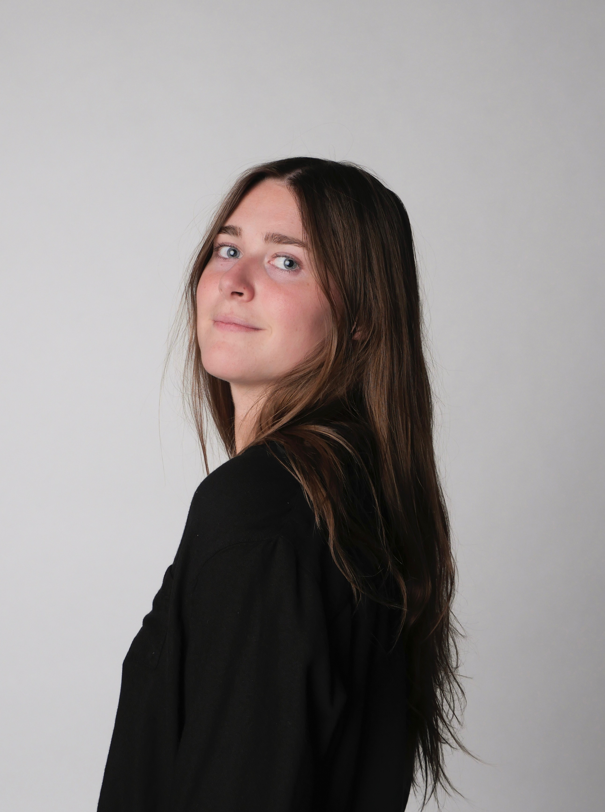

I'm a Senior at Syracuse University studying Information Management & Technology in the iSchool with a minor in Marketing.
From a young age I've loved creating content, initially beginning with YouTube videos. As I've grown up my creations have evolved to more technically sophisticated projects, like websites, platforms that not only tell stories but also collect, organize, and analyze data.
With my background in Technology, Marketing, and Communications, I'm interested in the way data can shape how we connect with consumers. I'm fascinated by how data insights can outline user experiences, optimize marketing strategies, and inspire design decisions, bringing together creativity and analytics.
This portfolio is a reflection of that intersection: a project blending the art of design with the power of data, all while continuing to fuel my passion for creating engaging digital experiences.
If you want to check out my resume click here.